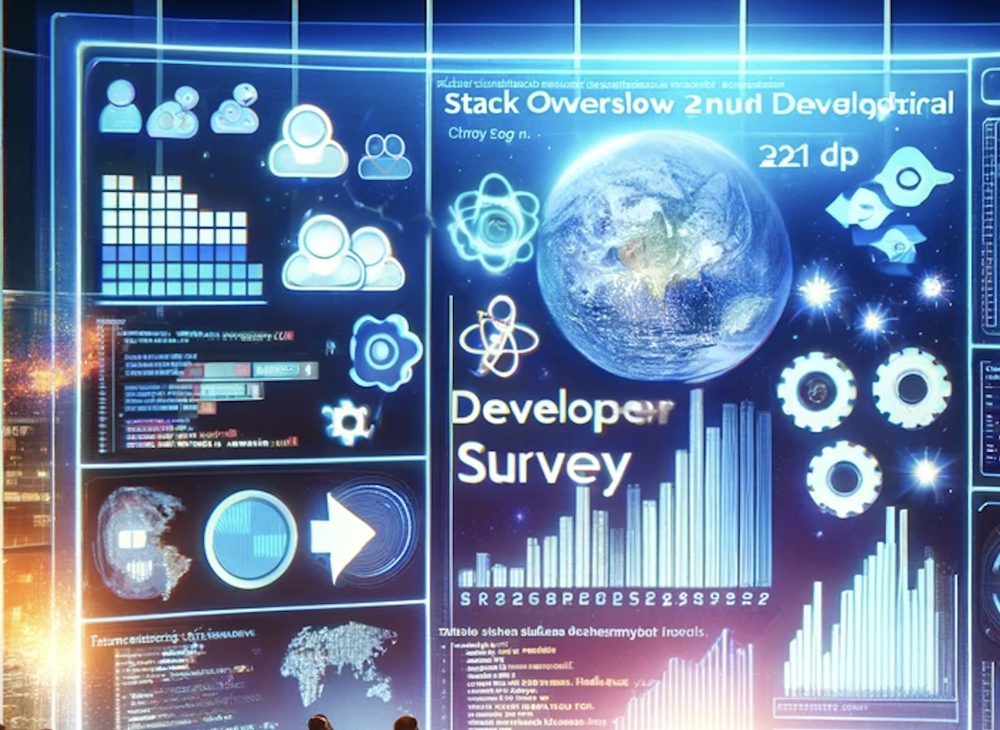

Unlocking Insights from the Stack Overflow Annual Developer Survey 2019
Project Description:
The Stack Overflow Annual Developer Survey serves as a treasure trove of information for understanding the dynamics of the developer ecosystem worldwide. With this project, I embarked on a journey to extract meaningful insights from this extensive dataset. The project was structured around several key objectives:
- Data Cleaning: I started by meticulously cleaning the dataset, handling missing values, removing duplicates, and ensuring data consistency to prepare a robust foundation for analysis.
- Visualization: Utilizing Python libraries such as Matplotlib and Seaborn, I created a series of visualizations to illustrate trends and patterns within the developer community. These visualizations ranged from simple bar charts to complex heatmaps, providing intuitive representations of the data.
- Analysis: With clean data and compelling visualizations in hand, I delved into the analysis phase, exploring various aspects such as average developer salaries per country, the prevalence of Python usage, preferred resources for problem-solving, and the correlation between developer salaries and age/gender.
- GitHub Repository: As a final step, I documented my code, findings, and visualizations in a GitHub repository, making it accessible to the wider community. Leveraging Git/GitHub commands, I ensured version control and collaborative development throughout the project lifecycle.